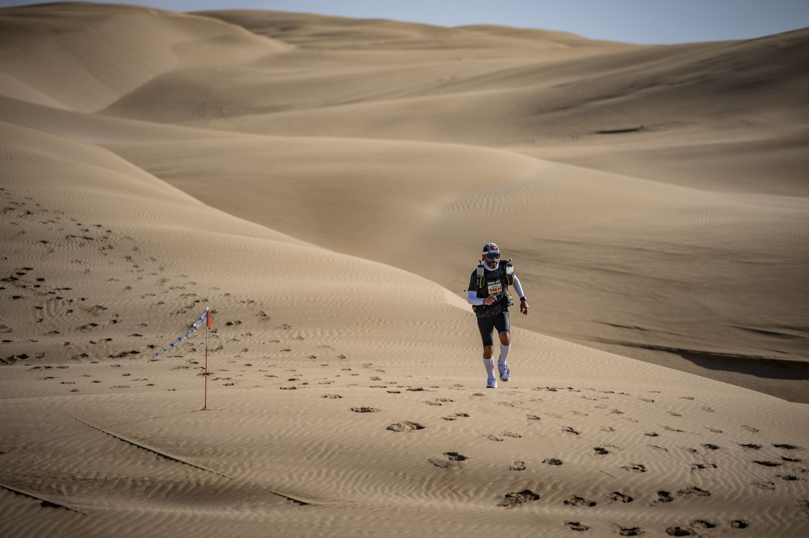
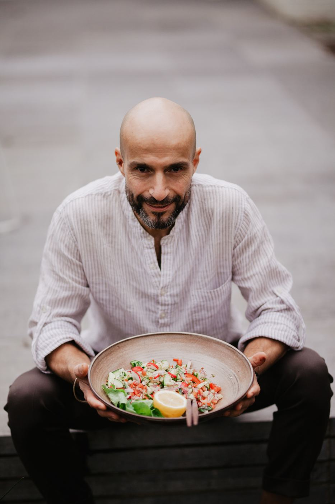
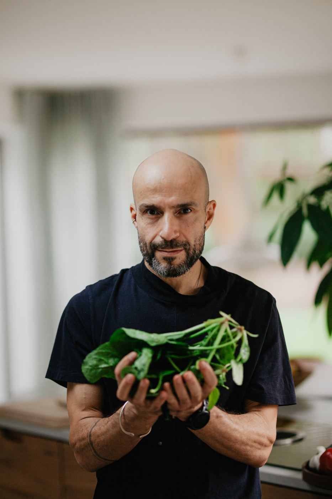

Leuven → Iran · vertrek 1 maart 2027
Ooit moest hij vluchten.
Nu loopt hij terug.
Elke dag een marathon, van België naar Iran
Ooit liep Maziar Toghraie weg uit Iran, omdat blijven geen optie meer was. Op 1 maart 2027 vertrekt hij opnieuw, deze keer te voet van België naar Iran. Vier tot zes maanden onderweg, elke dag een marathon.

© Elke Smit PhotographyOver Maziar
Achter de loper zit een lang verhaal.
Kok, ondernemer en ultraloper uit Leuven. Geboren in het zuiden van Iran. Tien jaar wachten op papieren, negen jaar Life Bar. Op 1 maart 2027 vertrekt hij te voet richting Iran.
Wanneer
Tussen nu en vertrek
Het leven van Maziar
Koken, lopen, leven. Op zijn eigen ritme.
Niet omdat ik iets wil bewijzen. Maar omdat ik iets wil begrijpen.Maziar, over de loop naar Iran Waarom ik loop

© Elke Smit PhotographyHet goede doel
Eén mens kan het verschil maken.
Toen Maziar te horen kreeg dat hij het land moest verlaten, gaf een advocaat hem tijd, en vooral hoop. Daarom gaat een deel van elke bijdrage naar een vzw. Welke, maken we binnenkort bekend.
Volg de tocht
Vlog
Zij lopen mee
Partners
Loop mee in je mailbox